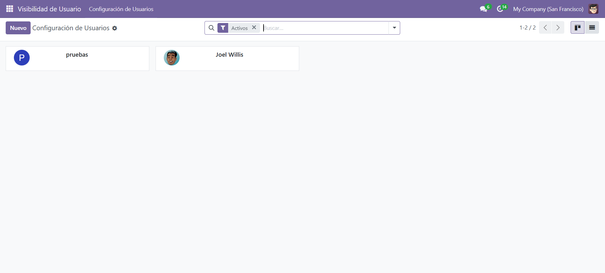
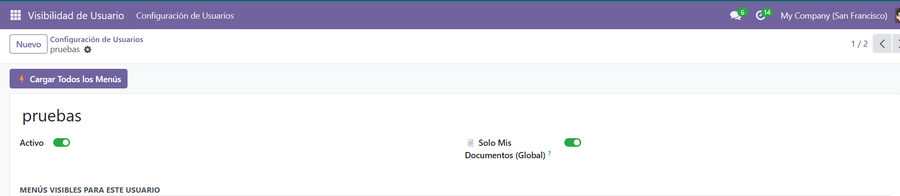
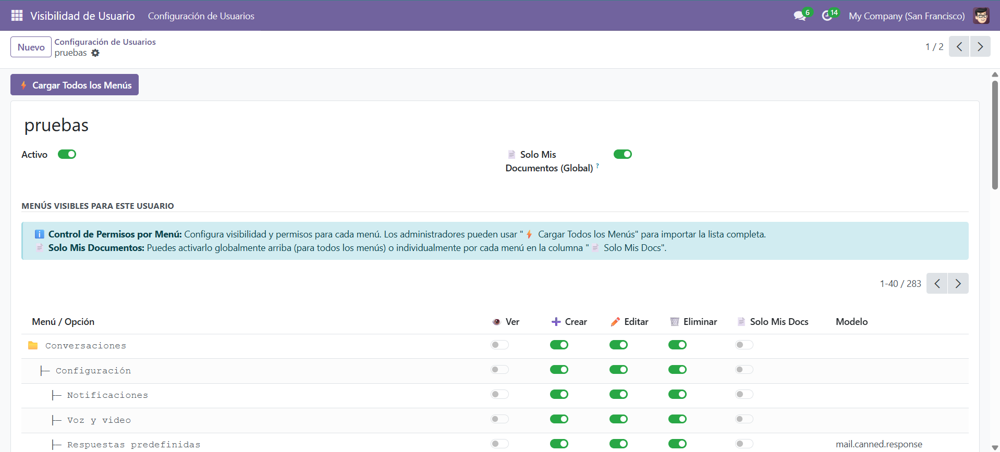
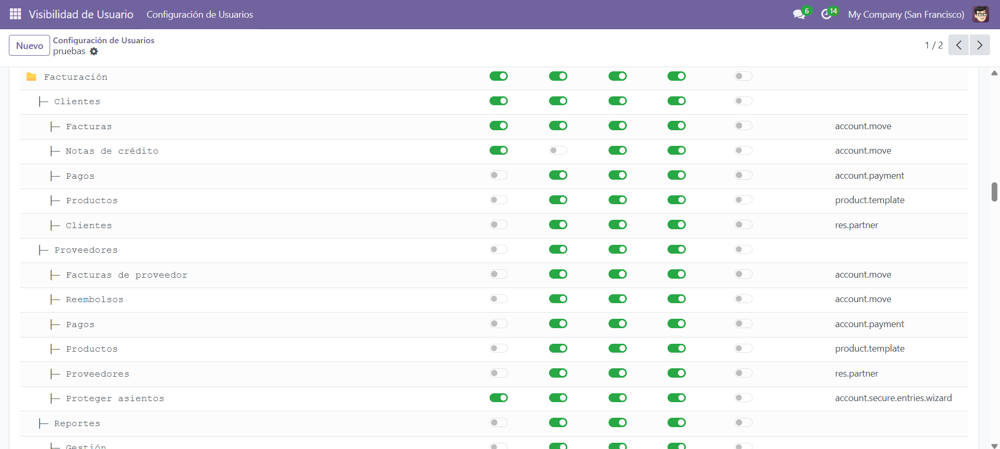

Visibilidad de Menús por Usuario entrega a los administradores un panel central para controlar, por usuario, qué menús son visibles y qué operaciones (Crear, Editar, Eliminar) están permitidas — sin modificar grupos de seguridad, escribir código Python ni crear reglas de registro. Los cambios se aplican al instante, sin reiniciar el servidor.
El módulo usa detección por acción, por lo que los menús que comparten el mismo modelo — como
Cotizaciones y Pedidos de Venta, o Facturas y Notas de Crédito
(ambos en account.move) — siempre se controlan de forma independiente.
Muestra u oculta cualquier menú para un usuario específico. Ocultar un menú padre oculta automáticamente todos sus hijos.
Controla los botones Crear, Editar y Eliminar de forma independiente por menú. Cotizaciones y Pedidos de Venta se gestionan siempre por separado, aunque usen el mismo modelo.
Actívalo por menú o de forma global para restringir las listas a los registros creados por o asignados al usuario actual. Sin sobreescribir dominios.
Impide que los usuarios abran fichas individuales de productos desde cualquier menú, sin desactivar el modelo de producto por completo.
Los cambios de permisos surten efecto de inmediato para el usuario. No se requiere reiniciar el servidor ni limpiar caché manualmente.
Un botón (solo admin) importa todos los menús del sistema en la configuración del usuario en un clic. Empieza a configurar en segundos.




El módulo sobreescribe get_views() en el modelo base de Odoo para modificar la arquitectura
XML de la vista en memoria antes de que llegue al navegador. Ajusta dinámicamente los atributos
create, edit, delete, duplicate e import
según la configuración guardada del usuario. No se modifica ningún registro de vista en la base de datos
— cada ajuste se calcula por petición y es completamente invisible para los demás usuarios.
La identificación de menús se apoya en options.action_id, siempre presente en Odoo 18 al
cargar una vista desde una entrada de menú. Esto garantiza que los menús que comparten el mismo modelo
(Cotizaciones vs. Pedidos de Venta, Facturas vs. Notas de Crédito) se traten siempre
como entradas totalmente independientes.
Soluciones profesionales de Odoo para tu negocio.
consultoresodoocolombia.odoo.com ·
siteco@outlook.com